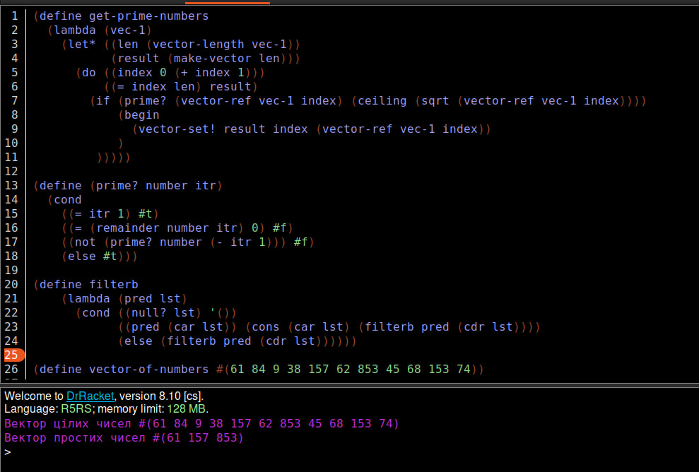
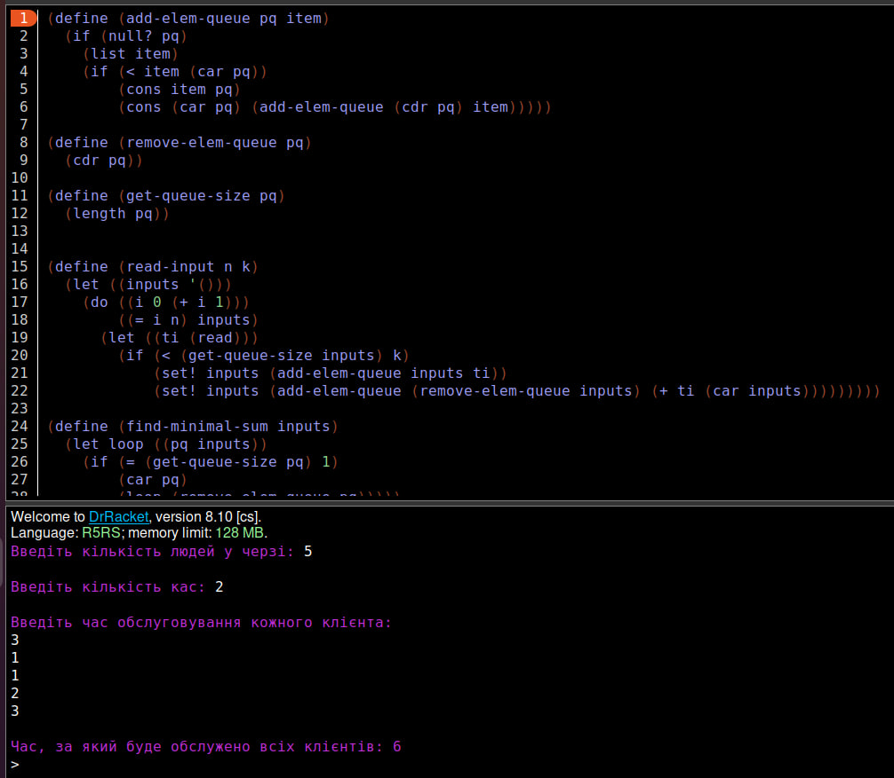

Лабораторна робота 6
Мета роботи
Опанувати теоретичні основи обробки структур типу векторів і матриць, стеків та черг мовами функціонального програмування та розробити програми їх реалізації
Вибір мови програмування та IDE
Для виконання даної лабораторної роботи було використано мову функціонального програмування Scheme та IDE DrRacket. Мова Scheme надає великий набір числових типів і операцій з ними, має неявні типи даних та статичну область видимості. DrRacket дозволяє програмувати на великій кількості мов функціонального програмування та має зручний інтерфейс.
Завдання 1
Умова завдання
Створити вектор цілих чисел. Знайти в векторі всі прості числа, скопіювати їх в новий вектор та надрукувати його.
Код програми:
(define get-prime-numbers
(lambda (vec-1)
(let* ((len (vector-length vec-1))
(result (make-vector len)))
(do ((index 0 (+ index 1)))
((= index len) result)
(if (prime? (vector-ref vec-1 index) (ceiling (sqrt (vector-ref vec-1 index))))
(begin
(vector-set! result index (vector-ref vec-1 index))
)
)))))
(define (prime? number itr)
(cond
((= itr 1) #t)
((= (remainder number itr) 0) #f)
((not (prime? number (- itr 1))) #f)
(else #t)))
(define filterb
(lambda (pred lst)
(cond ((null? lst) '())
((pred (car lst)) (cons (car lst) (filterb pred (cdr lst))))
(else (filterb pred (cdr lst))))))
(define vector-of-numbers #(61 84 9 38 157 62 853 45 68 153 74))
(define vector-of-prime-numbers (list->vector (filterb (lambda (x) (not (= x 0))) (vector->list (get-prime-numbers vector-of-numbers)))))
(display "Вектор цілих чисел ")
(display vector-of-numbers)
(newline)
(display "Вектор простих чисел ")
(display vector-of-prime-numbers)
(newline)
Результат роботи програми
Достовірність результату:
Програма правильно оброблює вектор, знаходячи в ньому прості числа, та копіює їх в новий вектор.
Завдання 2
Умова завдання
На вокзалі працює k кас, проте черга до них одна. Коли усі каси вільні, перші k клієнтів з черги підходять до кас. Інші чекають своєї черги. Як тільки кого-небудь буде обслужено і відповідна каса звільниться, наступна людина з черги підходить до цієї каси. Так продовжується до тих пір, доки не буде обслужено усіх клієнтів. Визначте час, за який буде обслужено усіх клієнтів.
Код програми:
(define (priority-queue-add pq item)
(if (null? pq)
(list item)
(if (< item (car pq))
(cons item pq)
(cons (car pq) (priority-queue-add (cdr pq) item)))))
(define (priority-queue-remove pq)
(cdr pq))
(define (priority-queue-size pq)
(length pq))
(define (read-input)
(let ((n (read))
(k (read))
(inputs '()))
(do ((i 0 (+ i 1)))
((= i n) inputs)
(let ((ti (read)))
(if (< (priority-queue-size inputs) k)
(set! inputs (priority-queue-add inputs ti))
(set! inputs (priority-queue-add (priority-queue-remove inputs) (+ ti (car inputs)))))))))
(define (find-minimal-sum inputs)
(let loop ((pq inputs))
(if (= (priority-queue-size pq) 1)
(car pq)
(loop (priority-queue-remove pq)))))
(let ((input-list (read-input)))
(display (find-minimal-sum input-list)))
Результат роботи програми
Достовірність результату:
Висновок
В ході виконання даної лабораторної роботи було створено вектор цілих чисел та новий вектор з простими числами з першого, також було змодельовано процес роботи черг вокзалу, які обслуговують людей в черзі. В результаті всі написані функції виконувалися без помилок та видавали правильний результат.